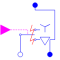

SwitchYDwithArcY-D-switch with arc |

|
Diagram
{kind=link}
Information
This information is part of the Modelica Standard Library maintained by the Modelica Association.
Star-Delta-switch with arc when switch opens.If control is false, plug_sp and plug_sn are star connected and plug_sp connected to the supply plug.
If control is true, plug_sp and plug_sn are delta connected and they are connected to the supply plug.
Note there is a delay between opening star connection and closing delta connection, respectively opening delta connection and closing star connection.
Parameters (7)
| m |
Value: 3 Type: Integer Description: Number of phases |
|---|---|
| Ron |
Value: 1e-5 Type: Resistance (Ω) Description: Closed switch resistance |
| Goff |
Value: 1e-5 Type: Conductance (S) Description: Opened switch conductance |
| delayTime |
Value: 0 Type: Time (s) Description: Time delay |
| V0 |
Value: Type: Voltage (V) Description: Initial arc voltage |
| dVdt |
Value: Type: VoltageSlope (V/s) Description: Arc voltage slope |
| Vmax |
Value: Type: Voltage (V) Description: Max. arc voltage |
Connectors (4)
| plugSupply |
Type: PositivePlug Description: To grid |
|
|---|---|---|
| plug_sp |
Type: PositivePlug Description: To positive stator plug |
|
| plug_sn |
Type: NegativePlug Description: To negative stator plug |
|
| control |
Type: BooleanInput[m] |
Components (5)
| star |
Type: Star |
|
|---|---|---|
| delta |
Type: Delta |
|
| idealCloser |
Type: CloserWithArc |
|
| idealOpener |
Type: OpenerWithArc |
|
| logicalDelay |
Type: LogicalDelay[m] |
Used in Examples (1)
|
Modelica.Electrical.Machines.Examples.InductionMachines Test example: InductionMachineSquirrelCage Y-D |